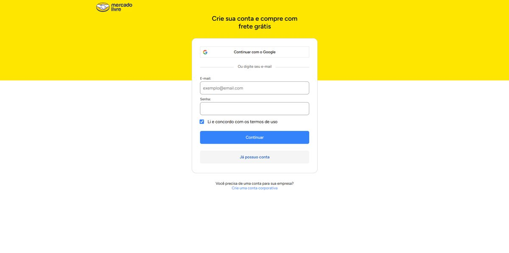
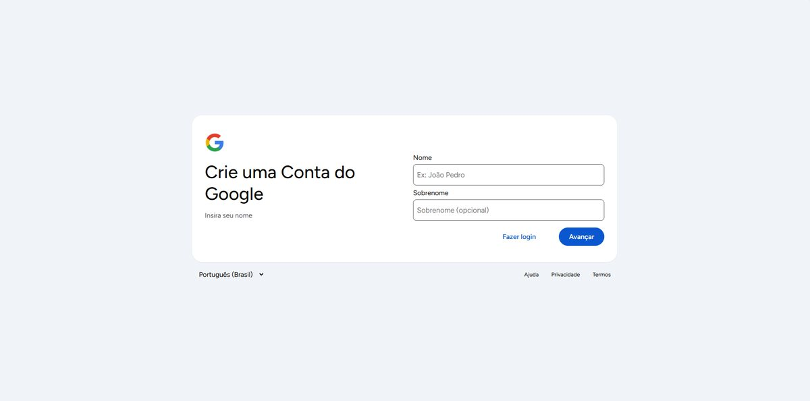
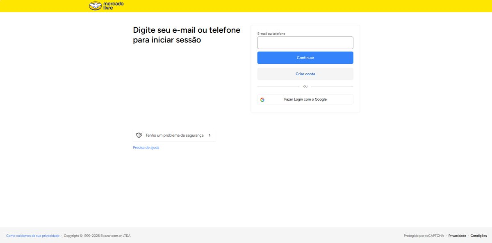
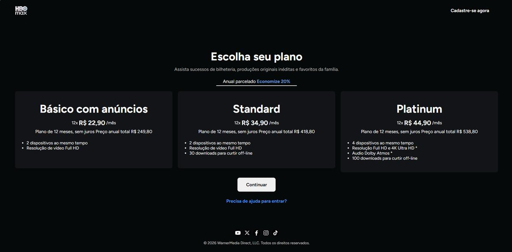
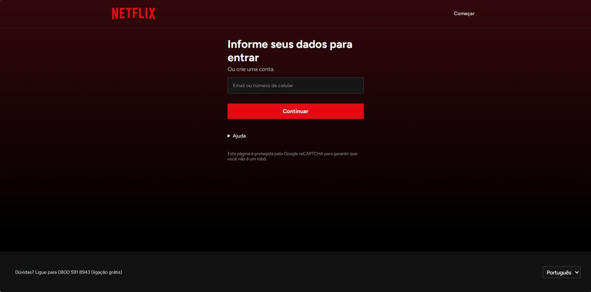
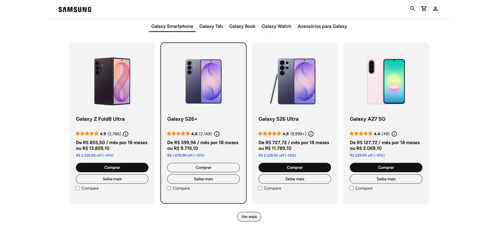
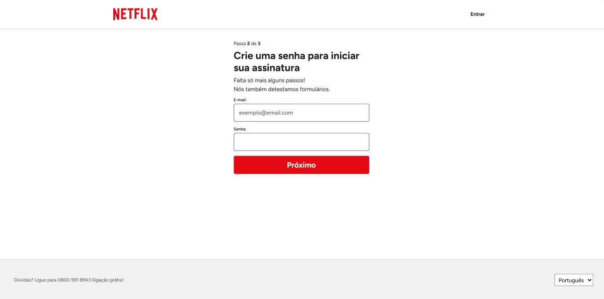
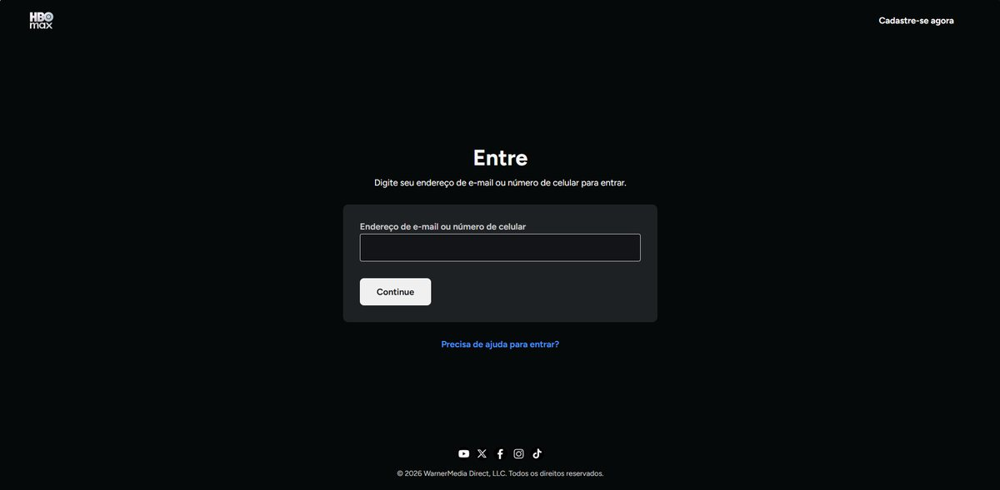
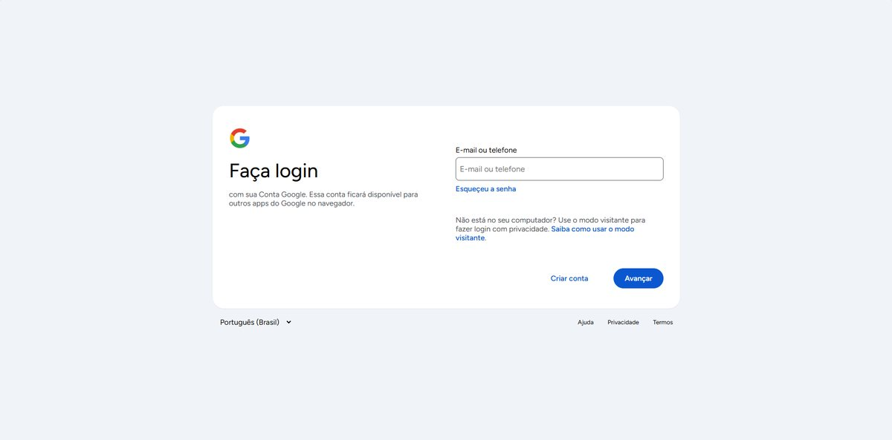

Desenvolvimento Web I · Turma DDW-2601
9 projetos · 9 publicados

Projeto 01
Djalma Roncy Queiroz Vieira

Projeto 02
Fagner de Sousa da Rocha

Projeto 03
Germano Inácio da Silva Junior

Projeto 04
Gustavo Barros de Aquino

Projeto 05
John Hermeson de Lima Rodrigues

Projeto 06
Mariana Vitoria de Lima Farias

Projeto 07
Monick Ellen Cavalcante de Sousa

Projeto 08
Paulo Victor Ramos Cavalcante

Projeto 09
Valquiria Soares de Oliveira